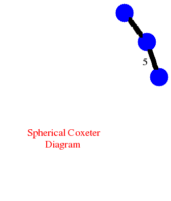
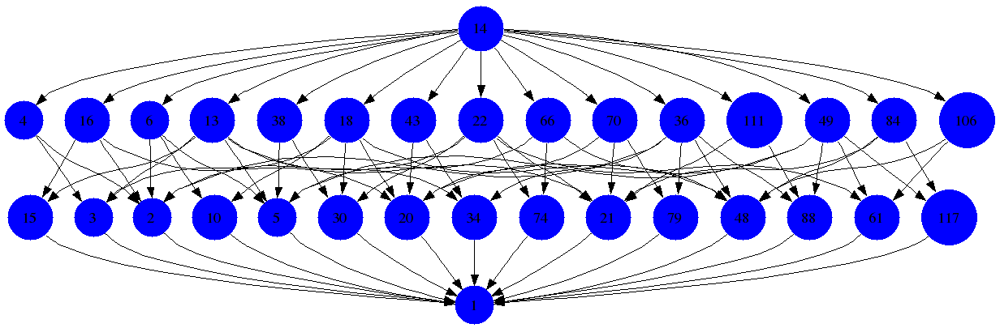

|
|||
|---|---|---|---|
| Tom
Brady and Column Watt have introduced the notion of a non-crossing
partitions lattice for an arbitrary finite reflection group W. The
following commands show how to display this lattice for the reflection
group H3. |
|||
| gap>
D:=[[1,[2,3]],[2,[3,5]]];; gap> CoxeterDiagramDisplay(D); 
NoncrossingPartitionsLatticeDisplay(D); |
|||
|